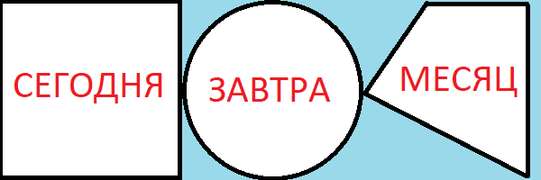
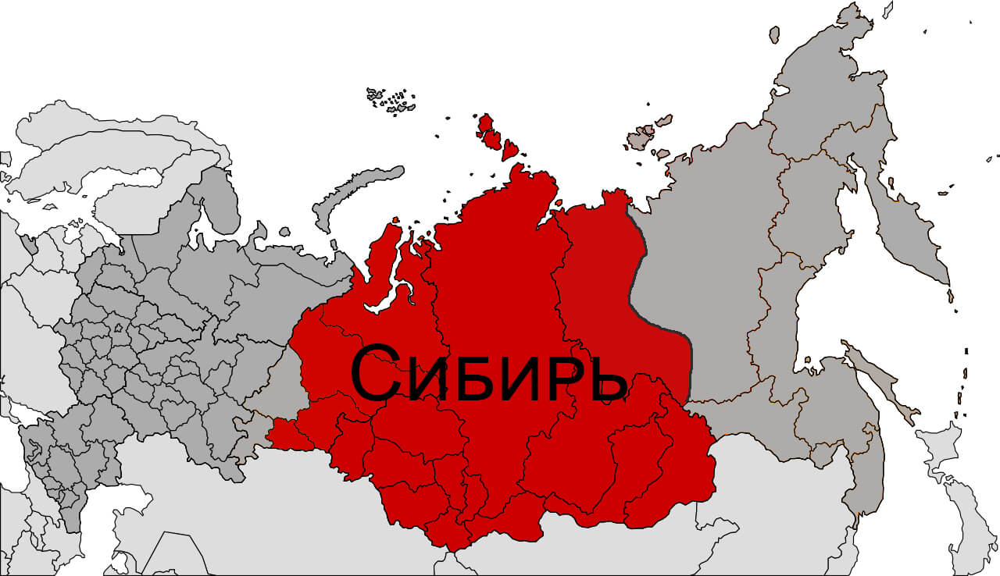
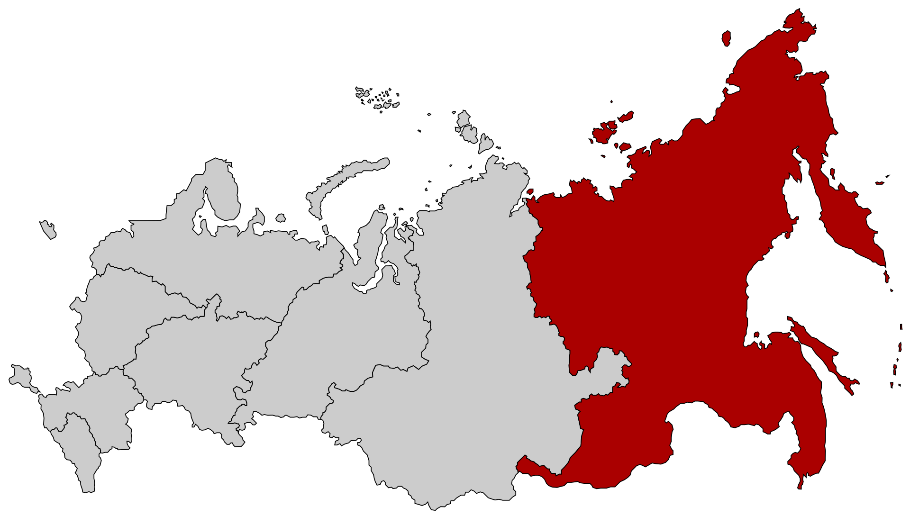

Прогноз погоды


Прогноз погоды — научно обоснованное предположение о том, какая погода будет в определенное время в определенном месте.
Наука о погоде и методах ее предсказания называется синоптической метеорологией.
Она является частью метеорологии — науки, изучающей атмосферу Земли и происходящие в ней явления.
Специалистов, которые составляют прогнозы, называют синоптиками.
Сегодня почти во всех странах существуют региональные национальные метеослужбы.
Гидрометцентр для России, METEO FRANCE для Франции, Offenbach для Германии и т. д.
Туда стекаются метеоданные о текущем состоянии атмосферы для дальнейших расчетов прогнозов погоды.
Все национальные метеослужбы обмениваются информацией с ВМО,
членами которого являются 193 государства и 6 территорий.
Алёна Фроловна «У природы нет плохой погоды»
У природы нет плохой погоды — Каждая погода благодать. Дождь ли снег — любое время года Надо благодарно принимать
Страна находится в средних и высоких широтах, из-за чего происходит четкое деление по сезонам. Атлантический воздух влияет на европейскую часть. Погода там мягче, чем на востоке. Меньше всего солнца получают полярные острова России, максимальное значение достигается в Западном Предкавказье. Территория страны лежит сразу в четырех основных климатических поясах. Каждый из них имеет свои показатели температуры и нормы осадков. С востока на запад наблюдается переход муссонного климата в континентальный. Центральная часть характеризуется отчетливым разграничением времен года. На юге отметка термометра зимой редко опускается ниже 0˚C.
Зима начинается с конца ноября и длится до середины марта. В зависимости от региона январская температура колеблется от -12˚C до -25˚C. Выпадает много снега, который тает только с наступлением оттепелей. Экстремально низкие температуры приходятся на январь. Февраль запоминается ветрами, часто ураганными. Сильные снегопады в последние несколько лет приходятся на начало марта. Природа оживает в апреле, но положительные температуры устанавливаются только в следующем месяце. В отдельных регионах угроза заморозков возникает в начале июня. Лето теплое, и продолжается 3 месяца. Циклоны приносят грозы и ливни. Ночные заморозки случаются уже в сентябре. На этот месяц приходится много осадков. В октябре происходит резкое похолодание, с деревьев облетает листва, идут дожди, может выпасть мокрый снег.
Один из самых крупных и самых холодных регионов России. Зима малоснежная, но очень холодная. На отдаленных территориях столбик термометра показывает более -40˚C. Снегопады и ветра случаются нечасто. Снег тает в апреле, а в регионе с вечной мерзлотой тепло приходит только в июне. Летние отметки составляют +20˚С, осадков мало. В сентябре начинается календарная осень, воздух быстро остывает. К октябрю дожди сменяются снегом.
Климат отличается разнообразием, он колеблется от континентального до муссонного. Примерная зимняя температура составляет -24˚C, выпадает много снега. На весеннее время приходится мало осадков. Лето жаркое, с повышенной влажностью, август считается периодом затяжных дождей.  На Курилах господствуют туманы, в Магадане начинаются белые ночи. Начало осени теплое, но дождливое. Отметки на термометре в середине октября показывают -14˚C. Через месяц наступают зимние морозы.
Минимальная январская температура составляет 0˚C, почва не промерзает. Выпавший снег быстро сходит. Большинство осадков выпадает весной, они становятся причиной многочисленных паводков. Летние температуры в среднем составляют 30˚C, во второй половине начинается засуха. Осень теплая и затяжная.